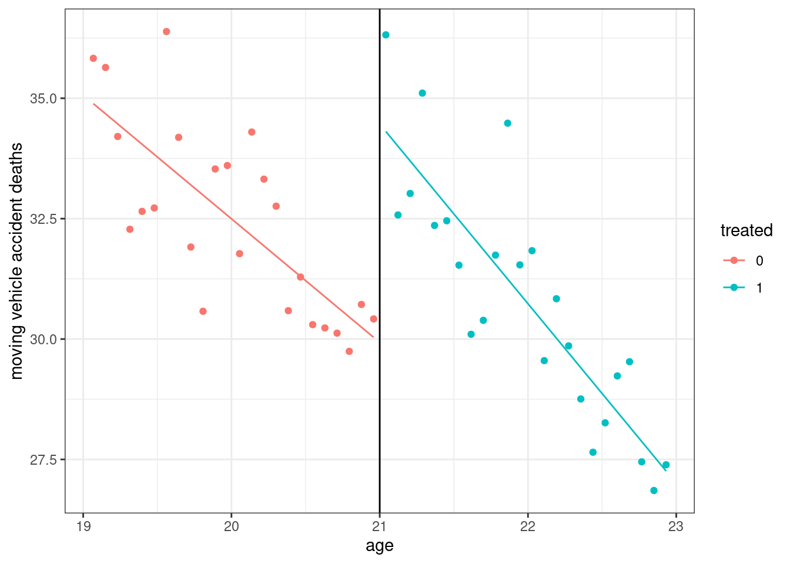

Topic 6 Causal Inference
For the remainder of the semester, we will talk about methods for understanding the causal effect of one variable on another.
Let’s start with an example. Suppose we were interested in understanding the causal effect of attending college on earnings. We know a lot about calculating averages, so let’s consider calculating average earnings of those who went to college and comparing that to the average earnings of those who didn’t go to college. Let’s use the data that we used all the way back in Chapter 2 to make this calculation.
load("us_data.RData")
col_earnings <- mean(subset(us_data, educ >= 16)$incwage)
non_col_earnings <- mean(subset(us_data, educ < 16)$incwage)
round(data.frame(col_earnings,
non_col_earnings,
diff=(col_earnings-non_col_earnings)),3)
#> col_earnings non_col_earnings diff
#> 1 87306.33 40557.28 46749.05This seems to be a huge difference. We are used to calling this difference a partial effect of going to college, but should we call it the causal effect or an average causal effect across individuals? Probably no. The main reason is that earnings of individuals who went to college may have been different from individuals that didn’t go to college even if no one went to college. Another way to say this is that there are a number of other things besides college that affect a person’s earnings (age, race, IQ, “ability,” “hardworking-ness,” luck, etc.). If these are also correlated with whether or not a person goes to college (you would think that at least some of these are), then that would make it hard to interpret our simple difference-in-means as a causal effect.
Before we move on, let me give some more examples of causal questions that may be of interest to economists:
Causal effects of economic policies
What was the causal effect of a country raising its interest rate on GDP or employment?
What was the causal effect of a change in the minimum wage on employment?
What was the causal effect of changing voter ID laws on the number of ballots cast?
Causal effects of individual/firm choices
What was the causal effect of a price increase on quantity demanded?
What was the causal effect of changing a product attribute on some outcome of interest (e.g., changing the font type on clicks on Google ads)?
What was the causal effect of a new cholesterol medication on cholesterol levels?
What was the causal effect of a job training program on wages?
You could easily come up with many others too. A large fraction of the questions that researchers in economics try to address are ultimately about sorting out these sorts of causal effects.
For terminology, we’ll refer to the variable that we are interested in understanding its causal effect (going to college in the earlier example) as the treatment. For simplicity, we will mostly focus on the case where the treatment is binary. We will use \(D_i\) to denote the treatment, so that \(D_i=1\) if individual \(i\) participates in the treatment and \(D_i=0\) if individual \(i\) does not participate in the treatment.
Example: SW 13.3
6.1 Potential Outcomes
SW 13.1
A powerful tool for thinking about causal effects is counterfactual reasoning. For individuals that participate in the treatment, we observe what their outcome is given that they participated in the treatment. But we don’t observe what their outcome would have been if they had not participated in the treatment. For example, among those that went to college, we don’t observe what their earnings would have been if they had not gone to college. For those that don’t participate in the treatment, we face the opposite problem — we don’t observe what their outcome would have been if they had participated in the treatment.
We’ll relate causal inference to the problem of trying to figure out what outcomes individuals that participated in the treatment would have experienced if they had not participated in the treatment (at least on average) and/or figuring out what outcomes individuals that did not participated in the treatment would have experienced if they had participated in the treatment.
To do this, let’s introduce somewhat more formal notation/terminology.
Treated potential outcome: \(Y_i(1)\), the outcome an individual would experience if they participated in the treatment
Untreated potential outcome: \(Y_i(0)\), the outcome an individual would experience if they did not participate in the treatment
For individuals that participate in the treatment, we observe \(Y_i(1)\) (but not \(Y_i(0)\)). For individuals that do not participate in the treatment, we observe \(Y_i(0)\) (but not \(Y_i(1)\)). Another way to write this is that the observed outcome, \(Y_i\) is given by \[\begin{align*} Y_i = D_i Y_i(1) + (1-D_i) Y_i(0) \end{align*}\]
We can think about the individual-level effect of participating in the treatment: \[\begin{align*} TE_i = Y_i(1) - Y_i(0) \end{align*}\]
Considering the difference between treated and untreated potential outcomes is a very natural (and, I think, helpful) way to think about causality. The causal effect of the treatment is the difference between the outcome that an individual would experience if they participate in the treatment relative to what they would experience if they did not participate in the treatment.
This notation also makes it clear that we are allowing for treatment effect heterogenity — the effect of participating in the treatment can vary across different individuals.
That said, most researchers essentially give up on trying to figure out individual level treatment effects. It is not so much that these are not interesting, more it is just that these are very hard to figure out. Take, for example, going to college, and suppose we are interested in the causal effect of going to college on a person’s earnings. I went to college, so I know what my \(Y(1)\) is, but I don’t know what my \(Y(0)\) is — and, I’d even have a hard time coming with a good guess as to what it might be.
6.2 Parameters of Interest
Instead of going for individual-level effects of participating in the treatment, most researchers instead go for more aggregated parameters. The two most common ones are the Average Treatment Effect (ATE) and Average Treatment Effect on the Treated (ATT).
\[\begin{align*} ATE = \mathbb{E}[Y(1) - Y(0)] \qquad \textrm{and} \qquad ATT = \mathbb{E}[Y(1)-Y(0) | D=1] \end{align*}\] \(ATE\) is the difference between treated potential outcomes and untreated potential outcomes, on average, and for the entire population. \(ATT\) is the difference between treated and untreated potential outcomes, on average, conditional on being in the treated group.
We will mostly focus on \(ATT\).
It is worth considering the challenges for learning about \(ATT\). In particular, notice that we can write \[\begin{align*} ATT = \mathbb{E}[Y(1)|D=1] - \mathbb{E}[Y(0)|D=1] \end{align*}\] and consider these term separately
\(\mathbb{E}[Y(1)|D=1]\) is the average treated potential outcome among the treated group. But we observe treated potential outcomes for the treated group \(\implies \mathbb{E}[Y(1)|D=1] = \mathbb{E}[Y|D=1]\). In other words, if we want to estimate this component of the \(ATT\), we can just look right at the data and compute the average outcome experienced by individuals in the treated group.
\(\mathbb{E}[Y(0)|D=1]\) is the average untreated potential outcome among the treated group. This is (potentially much) more challenging than the first term because we do not observe untreated potential outcomes among the treated group. But, in order to learn about the \(ATT\), we will have to somehow deal with this term. I will provide a number of strategies below, but it is important to remember that this is a major challenge, and their may not be a good solution.
6.3 Experiments
An experiment is often called the “gold standard” for causal inference. In particular, here, we are thinking about the case where participation in the treatment is randomly assigned — something like: people who show up to possibly participate in the treatment, someone flips a coin, and if the coin comes up heads then the person participates in the treatment or, if tails, they do not participate in the treatment.
Random assignment means that participating in the treatment is independent of potential outcomes, by construction. We can write this in math as \[\begin{align*} (Y(1), Y(0)) \perp D \end{align*}\] For our purposes, this also implies that \[\begin{align*} \mathbb{E}[Y(0)|D=1] = \mathbb{E}[Y(0)|D=0] = \mathbb{E}[Y|D=0] \end{align*}\] In other words, under random assignment, the average untreated potential among the treated group is equal to the average untreated potential outcome among the untreated group (this is the first equality). This is helpful because untreated potential outcomes are observed for those in the untreated group (this is the second equality).
Thus, under random assignment, \[\begin{align*} ATT = \mathbb{E}[Y|D=1] - \mathbb{E}[Y|D=0] \end{align*}\] In other words, the \(ATT\) is just the difference in (population) average outcomes among the treated group relative to average outcomes among the untreated group.
The natural way to estimate the ATT under random assignment is \[\begin{align*} \widehat{ATT} = \bar{Y}_{D=1} - \bar{Y}_{D=0} \end{align*}\] i.e., as we have done many times before, in order to estimate the parameter of interest, we just replace population averages with sample averages.
6.3.1 Estimating ATT with a Regression
It is also often convenient to introduce a regression based estimator of the ATT. This is primarily convenient as it will allow us to leverage all the things we already know about regressions, and, particularly, we it will immediately provide us with standard errors, t-statistics, etc.
In order to do this, let’s introduce the following assumption:
Treatment Effect Homogeneity: \(Y_i(1) - Y_i(0) = \alpha\) (and \(\alpha\) does not vary across individuals).
This is a potentially quite unrealistic assumption; I’ll make some additional comments about it below, but, for now, let’s just go with it.
Notice that we can also write \[\begin{align*} Y_i(0) = \beta_0 + U_i \end{align*}\] where \(\mathbb{E}[U|D=0] = \mathbb{E}[U|D=1] = 0\) (this holds under random assignment since random assignment implies that treated and untreated individuals do not have systematically different untreated potential outcomes)
Recalling the definition of the observed outcome, notice that \[\begin{align*} Y_i &= D_i Y_i(1) + (1-D_i) Y_i(0) \\ &= D_i (Y_i(1) - Y_i(0)) + Y_i(0) \\ &= \alpha D_i + \beta_0 + U_i \end{align*}\] where the second equality just involves re-arranging terms, and the third equality holds under treatment effect homogeneity and using the expression for \(Y_i(0)\) in the previous equation.
This suggests running a regression of the observed \(Y_i\) on \(D_i\) and interpreting the estimated version of \(\alpha\) as an estimate of the causal effect of participating in the treatment (and you can pick up standard errors, etc. from the regression output) — this is very convenient.
The previous discussion invoked the extra condition of treatment effect homogeneity. I want to point out some things related to this now. In the above regression model, we can alternatively (and equivalently) write it as \[\begin{align*} \mathbb{E}[Y|D] = \beta_0 + \alpha D \end{align*}\] Now plug in particular values for \(D\): \[\begin{align*} \mathbb{E}[Y|D=0] = \beta_0 \qquad \textrm{and} \qquad \mathbb{E}[Y|D=1] = \beta_0 + \alpha \end{align*}\] Subtracting the second equation from the first implies that \[\begin{align*} \alpha = \mathbb{E}[Y|D=1] - \mathbb{E}[Y|D=0] \end{align*}\] but notice that this is exactly what the \(ATT\) is equal to under random assignment. Thus, it is worth pointing out that, although we imposed the assumption of treatment effect homogeneity to arrive at the regression equation, our regression is “robust” to treatment effect heterogeneity.
6.3.2 Internal and External Validity
SW 13.2
Although experiments, when they are available, are considered the gold standard of causal inference, there are some ways they can go wrong.
An experiment is said to be internally valid if inferences about causal effects are valid for the population being studied.
An experiment is said to be externally valid if inferences about causal effects can be generalized from the study setting to other populations/time periods/settings.
Generally, its easier for an experiment to be internally valid than externally valid, but there are a number of “threats” to both internal and external validity.
Threats to internal validity:
Failure to randomize — individuals weren’t actually randomized into the treatment. This seems trivial, but some famous examples include experiments that assigned treatment participation by the first letter of a person’s last name. It turns out that this can be correlated with a number of other things (violating the random assignment assumption)
- As a side-comment, random treatment assignment implies that treatment should be uncorrelated with other covariates (e.g., race, sex, etc.) and this can be used as a way to check if the treatment was really randomly assigned.
Failure to follow treatment protocol — Individuals assigned to participate in the treatment don’t participate or vice versa.
- This is actually a pretty common problem. A leading example would be in the context of an experimental drug where patients who were assigned the placebo somehow to convince the doctor to give them the real drug.
Attrition — subjects non-randomly drop out of the sample
Placebo effects — Participating in an experiment can cause changes in behavior/outcomes.
- This is a main reason that medical experiments are often “double-blind”
Small sample sizes — Experiments can be expensive to run and therefore often include only a small number of observations, and, therefore, may be less able to detect small effects of a treatment
Experiments can sometimes be unethical
- The 2019 Nobel prize in economics was awarded for experiments in developing countries. Some of these experiments were somewhat controversial (e.g., randomly assigning some schools extra resources and randomly giving glasses to some students but not others).
Threats to External Validity:
Nonrepresentative samples — The population that is willing to participate in an experiment many be substantially different from the overall population.
- A closely related problem is that the economic environment may change across time and/or space which means that effects of some treatment might be different in different time periods or locations
Nonrepresentative program/policy — The policy in an experiment may be different from other policies being considered
- For example, the Perry Preschool Project was an experiment that provided intensive pre-school program that seems to have had large and long-lasting effects on participants. It is not clear if these results should apply to less intensive programs like Head Start.
General equilibrium effects — Expanding policies may alter the “state of the world” in a way that an experiment wouldn’t (e.g., the effects of a local minimum wage change could be different from a country-wide minimum wage change)
6.3.3 Example: Project STAR
Project STAR was a an experiment in Tennessee in 1980s on the effects of smaller class sizes on student performance where students and teachers were randomly assigned to be in a small class, a regular class, or a regular class with an aide. In this example, we’ll study the causal effect of being in a small class on reading test scores.
data("Star", package="Ecdat")
# limit data to small class or regular class
# this drops the other category of regular class size with an aide
Star <- subset(Star, classk %in% c("small.class", "regular"))
# regression for reading scores
reading <- lm(log(treadssk) ~ classk, data=Star)
summary(reading)
#>
#> Call:
#> lm(formula = log(treadssk) ~ classk, data = Star)
#>
#> Residuals:
#> Min 1Q Median 3Q Max
#> -0.31960 -0.04873 -0.00607 0.03929 0.36877
#>
#> Coefficients:
#> Estimate Std. Error t value Pr(>|t|)
#> (Intercept) 6.072176 0.001568 3871.502 < 2e-16 ***
#> classksmall.class 0.013324 0.002302 5.788 7.7e-09 ***
#> ---
#> Signif. codes: 0 '***' 0.001 '**' 0.01 '*' 0.05 '.' 0.1 ' ' 1
#>
#> Residual standard error: 0.07014 on 3731 degrees of freedom
#> Multiple R-squared: 0.0089, Adjusted R-squared: 0.008634
#> F-statistic: 33.5 on 1 and 3731 DF, p-value: 7.699e-09You’ll notice that this is a very simple analysis, but that we have access to an experiment means that we do need to do anything complicated — we can just use a regression to compare the differences between test scores of students in small classes relative to large tests. These results say that small class sizes increase reading test scores of students by about 1.3%.
Let me also make a few comments about internal and external validity.
I don’t have too much to say about internal validity. As far as I know, Project STAR is considered internally valid, but it would be worth reading more about it in order to confirm that.
Thinking about external validity though is quite interesting. For one thing, this experiment is quite old. Are the results still valid now? It is not clear; one could imagine that better teaching technologies now could possibly make having a small class less important. Another thing that is interesting is that this experiment was for very young students (I think students in kindergarten). Do these results imply that, say, high school or college students would also benefit from smaller class sizes? Again, this is not clear. It is a relevant piece of information, but it also would require a seemingly large amount of extrapolation to say that these results should inform policy decisions about class sizes in the present day and for different age groups.
6.4 Unconfoundedness
SW 6.8, SW Ch. 9
Unfortunately, we rarely have access to experimental data in applications or the ability to run experiments to evaluate causal effects programs/policies that we’d be interested in studying. For example, it’s hard to imagine convincing a large number of countries to randomly assign their interest rate, minimum wage, or immigration policies though these are all policies that economists would be interested in thinking about the causal effect of.
For the remainder of this chapter, we’ll discuss common approaches to causal inference when the treatment is not randomly assigned. We’ll start with what is probably the most common approach: unconfoundedness.
Unconfoundedness Assumption: \[\begin{align*} (Y(1),Y(0)) \perp D | X \end{align*}\] You can think of this as saying that, among individuals with the same covariates \(X\), they have the same distributions of potential outcomes regardless of whether or not they participate in the treatment. Note that the distribution of \(X\) is still allowed to be different between the treated and untreated groups. In other words, after you condition on covariates, there is nothing special (in terms of the distributions of potential outcomes) about the group that participates in the treatment relative to the group that doesn’t participate in the treatment.
- This is potentially a strong assumption. In order to believe this assumption, you need to believe that untreated individuals with the same characteristics can deliver, on average, the outcome that individuals in the treated group would have experienced if they had not participated in the treatment. In math, you can write this as \[\begin{align*} \mathbb{E}[Y(0) | X, D=1] = \mathbb{E}[Y(0) | X, D=0] \end{align*}\]
If you are willing to believe this assumption, then you can recover the \(ATT\). There are a few different ways that you could implement this. Probably the most common (and convenient) way is to link this condition to a regression (just like we did in the previous section on experiments).
To do this, let’s continue to make the treatment effect heterogeneity assumption as above. In addition, let’s assume a linear model for untreated potential outcomes \[\begin{align*} Y(0) = \beta_0 + \beta_1 X_1 + \beta_2 X_2 + \beta_3 X_3 + U \end{align*}\] and unconfoundedness implies that \(\mathbb{E}[U|X_1,X_2,X_3,D] = 0\) (the conditioning on \(D\) is the unconfoundedness part). Now, recalling the definition of the observed outcome, we can write \[\begin{align*} Y_i &= D_i Y_i(1) + (1-D_i) Y_i(0) \\ &= D_i (Y_i(1) - Y_i(0)) + Y_i(0) \\ &= D_i \alpha + \beta_0 + \beta_1 X_1 + \beta_2 X_2 + \beta_3 X_3 + U_i \end{align*}\] which suggests running the regression of observed \(Y\) on \(X_1,X_2,X_3,\) and \(D\) and interpreting the estimate of \(\alpha\) as the causal effect of participating in the treatment. In practice, this will be very similar to what we have done before — so the process would not be hard, but convincing someone (or even yourself) that unconfoundedness holds will be the bigger issue here.
As a final comment, the assumption of treatment effect homogeneity is not quite so innocuous here. It turns out that you can show that, in the presence of treatment effect heterogeneity, \(\alpha\) will be equal to a weighted average of individual treatment effects, but the weights can sometimes be “strange.” There are methods that are robust to treatment effect heterogeneity (they are beyond the scope of the current class, but they are not “way” more difficult than what we are doing here). That said, in my experience, the regression estimators (under treatment effect homogeneity) tend to deliver similar estimates to alternative estimators that are robust to treatment effect heterogeneity at least in the setup considered in this section.
6.5 Panel Data Approaches
SW All of Ch. 10 and 13.4
In the previous section, we invoked the assumption of unconfoundedness and were in the setup where \(X\) was fully observed. But suppose instead that you thought this alternative version of unconfoundedness held \[\begin{align*} (Y(1),Y(0)) \perp D | (X,W) \end{align*}\] where \(X\) were observed random variables, but \(W\) were not observed. Following exactly the same argument as in the previous section, this would lead to a regression like \[\begin{align*} Y_i = \alpha D_i + \beta_0 + \beta_1 X_i + \beta_2 W_i + U_i \end{align*}\] (I’m just including one \(X\) and one \(W\) for simplicity, but you can easily imagine the case where there are more.) If \(W\) were observed, then we could just run this regression, but since \(W\) is not observed, we run into the problem of omitted variable bias (i.e., if we just ignore \(W\), we won’t be estimating the causal effect \(\alpha\))
In this section, we’ll consider the case where a researcher has access to a different type of data called panel data. Panel data is data that follows the same individual (or firm, etc.) over time. In this case, it is often helpful to index variables by time. For example, \(Y_{it}\) is the outcome for individual \(i\) in time period \(t\). \(X_{it}\) is the value of a regressor for individual \(i\) in time period \(t\) and \(D_{it}\) is the value of the treatment for individual \(i\) in time period \(t\). If some variable doesn’t vary over time (e.g., a regressor like race), we won’t use a \(t\) subscript.
Panel data potentially gives us a way around the problem of not observing some variables that we would like to condition on in the model. This is particularly likely to be the case when \(W\) does not vary over time. Let’s start with there are exactly two time periods of panel data. In that case, we can write \[\begin{align*} Y_{it} = \alpha D_{it} + \beta_0 + \beta_1 X_{it} + \beta_2 W_i + U_{it} \end{align*}\] where we consider the case where \(D\) and \(X\) both change over time. Then, defining \(\Delta Y_{it} = Y_{it} - Y_{it-1}\) (and using similar notation for other variables), notice that \[\begin{align*} \Delta Y_{it} = \alpha \Delta D_{it} + \beta_1 \Delta X_{it} + \Delta U_{it} \end{align*}\] which, importantly, no longer involves the unobserved \(W_i\) and suggests running the above regression and interpreting the estimated version of \(\alpha\) as an estimate of the causal effect of participating in the treatment.
Time fixed effects — The previous regression did not include an intercept. It is common in applied work to allow for the intercept to vary over time (i.e., so that \(\beta_0 = \beta_{0,t}\)) which allows for “aggregate shocks” such as recessions or common trends in outcomes over time. In practice, this amounts to just including an intercept in the previous regression, for example,
\[ \Delta Y_{it} = \underbrace{\theta_t} + \alpha \Delta D_{it} + \beta_1 \Delta X_{it} + \Delta U_{it} \]
Often, there may be many omitted, time invariant variables. In practice, these are usually just lumped into a single individual fixed effect — even if there are many time invariant, unobserved variables, we can difference them all out at the same time \[\begin{align*} Y_{it} &= \alpha D_{it} + \beta_{0,t} + \beta_1 X_{it} + \underbrace{\beta_2 W_{1i} + \beta_3 W_{2i} + \beta_4 W_{3i}} + U_{it} \\ &= \alpha D_{it} + \beta_{0,t} + \underbrace{\eta_i} + U_{it} \end{align*}\] and we can follow the same strategies as above.
Another case that is common in practice is when there are more than two time periods. This case is similar to the previous one except there are multiple ways to eliminate the unobserved fixed effect. The two most common are the
Within estimator
To motivate this approach, notice that, if, for each individual, we average their outcomes over time, the we get \[\begin{align*} \bar{Y}_i = \alpha \bar{D}_i + \beta_1 \bar{X}_i + (\textrm{time fixed effects}) + \bar{U}_i \end{align*}\] (where I have just written “time fixed effects” to indicate that these are transformed version of original fixed but still show up here.) Subtracting this equation from the expression for \(Y_{it}\) gives \[\begin{align*} Y_{it} - \bar{Y}_i = \alpha (D_{it} - \bar{D}_i) + \beta_1 (X_{it} - \bar{X}_i) + (\textrm{time fixed effects}) + U_{it} - \bar{U}_i \end{align*}\]
This is a feasible regression to estimate (everything is observed here). This is called a within estimator because the terms \(\bar{Y}_i\), \(\bar{D}_i\), and \(\bar{X}_i\) are the within-individual averages-over-time of the corresponding variable.
First differences
Another approach to eliminating the unobserved fixed effects is to directly consider \(\Delta Y_{it}\):
\[\begin{align*} \Delta Y_{it} = \alpha \Delta D_{it} + \beta_1 \Delta X_{it} + \Delta U_{it} \end{align*}\]
This is the same expression as we had before for the two period case. Only here you would include observations from all available time periods on \(\Delta Y_{it}, \Delta D_{it}, \Delta X_{it}\) in the regression.
It’s worth mentioning the cases where a fixed effects strategy can break down:
Unobserved variables vary over time
\[ Y_{it} = \alpha D_{it} + \beta_0 + \beta_1 X_{it} + \beta_2 \underbrace{W_{it}} + U_{it} \] In this case,
\[ \Delta Y_{it} = \alpha \Delta D_{it} + \beta_1 \Delta X_{it} + \beta_2 \underbrace{\Delta W_{it}} + \Delta U_{it} \]
which still involves the unobserved \(W_{it}\), and implies that the fixed effects regression will contain omitted variable bias.
The effect of unobserved variables varies over time
\[ Y_{it} = \alpha D_{it} + \beta_0 + \beta_1 X_{it} + \underbrace{\beta_{2,t}} W_i + U_{it} \] In this case,
\[ \Delta Y_{it} = \alpha \Delta D_{it} + \beta_1 \Delta X_{it} + \underbrace{(\beta_{2,t} - \beta_{2,t-1})} W_i + \Delta U_{it} \]
which still involves the unobserved \(W_i\) (even though it doesn’t vary over time) and, therefore, the fixed effects regressions we have been considering will contain omitted variable bias.
Also, the assumption of treatment effect homogeneity can potentially matter a lot in this context. This will particularly be the case when (i) individuals can become treated at different points in time, and (ii) there are treatment effect dynamics (so that the effect of participating in the treatment can vary over time) — both of these are realistic in many applications. This is a main research area of mine and one I am happy to talk way more about.
6.5.1 Difference in differences
The panel data approaches that we have been talking about so far are closely related to a natural-experiment type of strategy called difference in differences (DID).
One important difference relative to the previous approach is that DID is typically implemented when some units (these are often states or particular locations) implement a policy at some time period while others do not; and, in particular, we observe some periods before any units participate in the treatment.
Let’s think about the case with exactly two time periods: \(t\) and \(t-1\). In this case, we’ll suppose that the outcomes that we observe are \[\begin{align*} Y_{it} &= D_i Y_{it}(1) + (1-D_i) Y_{it}(0) \\ Y_{it-1} &= Y_{it-1}(0) \end{align*}\] In other words, in the second period, we observe treated potential outcomes for treated units and untreated potential outcomes for untreated units (this is just like the cross-sectional case above). But in the first period, we observe untreated potential outcomes for all units — because no one is treated yet.
DID is often motivated by an assumption called the parallel trends assumption:
Parallel Trends Assumption \[\begin{align*} \mathbb{E}[\Delta Y_t(0) | D=1] = \mathbb{E}[\Delta Y_t(0) | D=0] \end{align*}\] This says that the path of outcomes that individuals in the treated group would have experienced if they had not been treated is the same as the path of outcomes that individual in the untreated group actually experienced.
As before, we continue to be interested in \[\begin{align*} ATT = \mathbb{E}[Y_t(1) - Y_t(0) | D=1] \end{align*}\] Recall that the key identification challenge if for \(\mathbb{E}[Y_t(0)|D=1]\) here, and notice that \[\begin{align*} \mathbb{E}[Y_t(0) | D=1] &= \mathbb{E}[\Delta Y_t(0) | D=1] + \mathbb{E}[Y_{t-1}(0) | D=1] \\ &= \mathbb{E}[\Delta Y_t(0) | D=0] + \mathbb{E}[Y_{t-1}(0)|D=1] \\ &= \mathbb{E}[\Delta Y_t | D=0] + \mathbb{E}[Y_{t-1}|D=1] \end{align*}\] where the first equality adds and subtracts \(\mathbb{E}[Y_{t-1}(0)|D=1]\), the second equality uses the parallel trends assumption, and the last equality holds because all the potential outcomes in the previous line are actually observed outcome. Plugging this expression into the one for \(ATT\) yields: \[\begin{align*} ATT = \mathbb{E}[\Delta Y_t | D=1] - \mathbb{E}[\Delta Y_t | D=0] \end{align*}\] In other words, under parallel trends, the \(ATT\) can be recovered by comparing the path of outcomes that treated units experienced relative to the path of outcomes that untreated units experienced (the latter of which is the path of outcomes that treated units would have experienced if they had not participated in the treatment).
As above, it is often convenient to estimate \(ATT\) using a regression. In fact, you can show that (in the case with two periods), \(\alpha\) in the following regression is equal to the \(ATT\): \[\begin{align*} Y_{it} = \alpha D_{it} + \theta_t + \eta_i + v_{it} \end{align*}\] where \(\mathbb{E}[v_t | D] = 0\).
6.5.2 Computation
The lab in this chapter uses panel data to think about causal effects, so I won’t provide an extended discussion here but rather just mention the syntax for a few panel data estimators. Let’s suppose that you had a data frame that, for the first few rows, looked like (this is totally made up data)
#> id year Y X1 X2
#> 1 1 2019 87.92934 495.4021 1
#> 2 1 2020 102.77429 495.6269 1
#> 3 1 2021 110.84441 495.4844 0
#> 4 2 2019 76.54302 492.8797 1
#> 5 2 2020 104.29125 496.1825 1
#> 6 2 2021 105.06056 492.0129 1This is what panel data typically looks like — here, we are following a single individual (who is distinguished by their id variable) over three years (from 2019-2021), there is an outcome Y and potential regressors X1 and X2.
There are several packages in R for estimating the fixed effects models that we have been considering. I mainly use plm (for “panel linear models”), so I’ll show you that one and then mention one more.
For plm, if you want to estimate a fixed effects model in first differences, you would use the plm command with the following sort of syntax
library(plm)
plm(Y ~ X1 + X2 + as.factor(year),
data=name_of_data,
effect="individual",
model="fd",
index="id")We include here as.factor(year) to include time fixed effects, effect="individual" means to include an individual fixed effect, model="fd" says to estimate the model in first differences, and index="id" means that the individual identifier is in the column “id.”
The code for estimating the model using a within transformation is very similar:
plm(Y ~ X1 + X2 + as.factor(year),
data=name_of_data,
effect="individual",
model="within",
index="id")The only difference is that model="fd" has been replaced with model="within".
Let me also just mention that the estimatr package can estimate a fixed effects model using a within transformation. The code for this case would look like
library(estimatr)
lm_robust(Y ~ X1 + X2 + as.factor(year),
data=name_of_data,
fixed_effects=~id)I think the advantage of using this approach is that it seems straightforward to get the heteroskedasticity robust standard errors (or cluster-robust standard errors) that are popular in economics (as we have done before for heteroskedasticity robust standard errors for a regression with just cross sectional data). But I am not sure how (or if it is possible) to use estimatr to estimate the fixed effects model in first differences.
6.6 Instrumental Variables
SW all of chapter 12
In the previous section, I used the word natural experiment but didn’t really define it. When an actual experiment is not actually available, a very common strategy used by researchers interested in causal effects is to consider natural experiments — these are not actual experiments, but more like the case where “something weird” happens that makes some individuals more likely to participate in the treatment without otherwise affecting their outcomes. This “something weird” is called an instrumental variable.
Let me give you some examples:
This is not as popular of a topic as it used to be, but many economists used to be interested in the causal effect of military service on earnings. This is challenging because individuals “self-select” into the military (i.e., individuals don’t just randomly choose to join the military, and, while there may be many dimensions of choosing to join the military, probably one dimension is what a person expects the effect to be on their future earnings).
- A famous example of an instrumental variable in this case is an individual’s Vietname draft lottery number. Here, the idea is that a randomly generated lottery number (by construction) doesn’t have any direct effect on earnings, but it does affect the chances that someone participates in the military. This is therefore a natural experiment and could serve the role of an instrumental variable.
For studying the effect of education on on earnings, researchers have used the day of birth as an instrument for years of education. The idea is that compulsory school laws are set up so that individuals can leave school when they reach a certain age (e.g., 16). But this means that, among students that want to drop out as early as they can, students who have an “early” birthday (usually around October) will have spent less time in school than students who have a “late” birthday (usually around July) at any particular age. This is a kind of natural experiment — comparing earnings of students who drop out at 16 for those who have early birthdays relative to late birthdays.
Let’s formalize these arguments. Using the same arguments as before, suppose we have a regression that we’d like to run
\[ Y_i = \beta_0 + \alpha D_i + \underbrace{\beta_1 W_i + U_i}_{V_i} \] and interpret our estimate of \(\alpha\) as an estimate of the causal effect of participating in the treatment. And where, for simplicity, I am not including any \(X\) covariates and where we do not observe \(W\). If \(D\) is correlated with \(W\), then just ignoring \(W\) and running a regression of \(Y\) on \(D\) will result in omitted variable bias so that regression does not recover an estimate of \(\alpha\). To help with the discussion below, we’ll define \(V_i\) to be the entire unobservable term, \(\beta_1 W_i + U_i\), in the above equation.
An instrumental variable, which we’ll call \(Z\), needs to satisfy the following two conditions:
\(\mathrm{cov}(Z,V) = 0\) — This condition is called the exclusion restriction, and it means that the instrument is uncorrelated with the error term in the above equation. In practice, we’d mainly need to make sure that it is uncorrelated with whatever we think is in \(W\).
\(\mathrm{cov}(Z,D) \neq 0\) — This condition is called instrument relevance, and it means that the instrument needs to actually affect whether or not an individual participates in the treatment. We’ll see why this condition is important momentarily.
Next, notice that
\[ \begin{aligned} \mathrm{cov}(Z,Y) &= \mathrm{cov}(Z,\beta_0 + \alpha D + V) \\ &= \alpha \mathrm{cov}(Z,D) \end{aligned} \] which holds because \(\mathrm{cov}(Z,\beta_0) = 0\) (because \(\beta_0\) is a constant) and \(\mathrm{cov}(Z,V)=0\) by the first condition of \(Z\) being a valid instrument. This implies that
\[ \alpha = \frac{\mathrm{cov}(Z,Y)}{\mathrm{cov}(Z,D)} \] That is, if we have a valid instrument, the above formula gives us a path to recovering the causal effect of \(D\) on \(Y\). [Now you can also see why we needed the second condition — otherwise, we could divide by 0 here.]
The intuition for this is the following: changes in the instrument can cause changes in the outcome but only because they can change whether or not an individual participates in the treatment. These changes show up in the numerator. They are scaled by how much changes in the instrument result in changes in the treatment.
If there are other covariates in the model, the formula for \(\alpha\) will become more complicated. But you can use the ivreg function in the ivreg package to make these complications for you.
6.6.1 Example: Return to Education
In this example, we’ll estimate the return to education using whether or not an individual lives close to a college as an instrument for attending college. The idea is that (at least after controlling for some other covariates), the distance that a person lives from a college should not directly affect their earnings but it could affect whether or not they attend college due to it being more or less convenient. I think that the papers that use this sort of an idea primarily have in mind that distance-to-college may affect whether or not a student attends a community college rather than a university.
library(ivreg)
library(modelsummary)
data("SchoolingReturns", package="ivreg")
lm_reg <- lm(log(wage) ~ education + poly(experience, 2, raw = TRUE) + ethnicity + smsa + south,
data = SchoolingReturns)
iv_reg <- ivreg(log(wage) ~ education + poly(experience, 2, raw = TRUE) + ethnicity + smsa + south,
~ nearcollege + poly(age, 2, raw = TRUE) + ethnicity + smsa + south,
data = SchoolingReturns)
reg_list <- list(lm_reg, iv_reg)
modelsummary(reg_list)| Model 1 | Model 2 | |
|---|---|---|
| (Intercept) | 4.734 | 4.066 |
| (0.068) | (0.608) | |
| education | 0.074 | 0.133 |
| (0.004) | (0.051) | |
| poly(experience, 2, raw = TRUE)1 | 0.084 | 0.056 |
| (0.007) | (0.026) | |
| poly(experience, 2, raw = TRUE)2 | −0.002 | −0.001 |
| (0.000) | (0.001) | |
| ethnicityafam | −0.190 | −0.103 |
| (0.018) | (0.077) | |
| smsayes | 0.161 | 0.108 |
| (0.016) | (0.050) | |
| southyes | −0.125 | −0.098 |
| (0.015) | (0.029) | |
| Num.Obs. | 3010 | 3010 |
| R2 | 0.291 | 0.176 |
| R2 Adj. | 0.289 | 0.175 |
| AIC | 2633.4 | |
| BIC | 2681.5 | |
| Log.Lik. | −1308.702 | |
| F | 204.932 |
The main parameter of interest here is the coefficient on education. The IV estimates are noticeably larger than the OLS estimates (0.133 relative to 0.074). [This is actually quite surprising as you would think that OLS would tend to over-estimate the return to education. This is a very famous example, and there are actually quite a few “explanations” from labor economists about why this sort of result arises.]
6.7 Regression Discontinuity
SW 13.4
The final type of natural experiment that we will talk about is called regression discontinuity. The sort of natural experiment is available when there is a running variable with a threshold (i.e., cutoff) where individuals above the threshold are treated while individuals below the threshold are not treated. These sorts of thresholds/cutoffs are fairly common.
Here are some examples:
Cutoffs that make students eligible for a scholarship (e.g., the Hope scholarship)
Rules about maximum numbers of students allowed in a classroom in a particular school district
Very close political elections
Very close union elections
Thresholds in tax laws
Then, the idea is to compare outcomes among individuals that “barely” were treated relative to those that “barely” weren’t treated. By construction, this often has properties that are similar to an actual experiment as those that are just above the cutoff should have observed and unobserved characteristics that are the same as those just below the cutoff.
Typically, regression discontinuity designs are implemented using a regression that includes a binary variable for participating in the treatment, the running variable itself, and the interaction between the running variable and the treatment, using only observations that are “close” to the cutoff. [What should be considered “close” to the cutoff is actually a hard choice and there are tons of papers suggesting various approaches to decide what “close” means — we’ll largely avoid this and just pick what we think is close.] The estimated coefficient on the treatment indicator variable is an estimate of the average effect of participating in the treatment among those individuals who are close to the cutoff.
This will become clearer with an example.
6.7.1 Example: Causal effect of Alcohol on Driving Deaths
In this section, we’ll be interested in the causal effect of young adult alcohol consumption on the number of deaths in car accidents.
The idea here will be to compare the number of deaths in car accidents that involve someone who is 21 or just over to the number of deaths in car accidents that involve someone who is just under 21. The reason to make this comparison is that alcohol consumption markedly increases when individuals turn 21 (due to that being the legal drinking age in the U.S.). If alcohol consumption increases car accident deaths, then we should also be able to detect a jump in the number of car accident deaths involving those who are just over 21.
The data that we have consists of age groups by age up to a particular month (agecell) and the number of car accident deaths involving that age group (mva).
library(ggplot2)
data("mlda", package="masteringmetrics")
# drop some data with missing observations
mlda <- mlda[complete.cases(mlda),]
# create treated variable
mlda$D <- 1*(mlda$agecell >= 21)In regression discontinuity designs, it is very common to show a plot of the data. That’s what we’ll do here.
ggplot(mlda, aes(x=agecell, y=mva)) +
geom_point() +
geom_vline(xintercept=21) +
xlab("age") +
ylab("moving vehicle accident deaths") +
theme_bw()
This figure at least suggests that the number of car accident deaths does appear to jump at age 21.
Now, let’s run the regression that we talked about earlier, involving a treatment dummy, age, and age interacted with the treatment.
rd_reg <- lm(mva ~ D + agecell + agecell*D, data=mlda)
summary(rd_reg)
#>
#> Call:
#> lm(formula = mva ~ D + agecell + agecell * D, data = mlda)
#>
#> Residuals:
#> Min 1Q Median 3Q Max
#> -2.4124 -0.7774 -0.2913 0.8495 3.2378
#>
#> Coefficients:
#> Estimate Std. Error t value Pr(>|t|)
#> (Intercept) 83.8492 9.3328 8.984 1.63e-11 ***
#> D 28.9450 13.8638 2.088 0.0426 *
#> agecell -2.5676 0.4661 -5.508 1.77e-06 ***
#> D:agecell -1.1624 0.6592 -1.763 0.0848 .
#> ---
#> Signif. codes: 0 '***' 0.001 '**' 0.01 '*' 0.05 '.' 0.1 ' ' 1
#>
#> Residual standard error: 1.299 on 44 degrees of freedom
#> Multiple R-squared: 0.7222, Adjusted R-squared: 0.7032
#> F-statistic: 38.13 on 3 and 44 DF, p-value: 2.671e-12These results suggest that alcohol consumption increased car accident deaths (you can see this from the estimated coefficient on D). [The setup in this example is somewhat simplified; if you wanted to be careful about how much alcohol consumption increased car accident deaths, then we would probably need to scale up our estimate by how much alcohol consumption increases on average when people turn 21. Nevertheless, what we have presented above does suggest that alcohol consumption increases car accident deaths.]
Finally, let me show one more plot that is common to report in a regression discontinuity design.
# get predicted values for plotting
mlda$preds <- predict(rd_reg)
# make plot
ggplot(mlda, aes(x=agecell, y=mva, color=as.factor(D))) +
geom_point() +
geom_line(aes(y=preds)) +
geom_vline(xintercept=21) +
labs(color="treated", x="age", y="moving vehicle accident deaths") +
theme_bw()
This shows the two lines that we effectively fit with the regression that included the binary variable for the treatment, the running variable, and their interaction. The “jump” between the red line and the blue line at age=21 is our estimated effect of the treatment.
6.8 Lab 5: Drunk Driving Laws
For this lab, we will use the Fatalities data. We will study the causal effect of mandatory jail sentence policies for drunk driving on traffic fatalities. The Fatalities data consists of panel data of traffic fatality death rates, whether or not a state has a mandatory jail sentence policy or not as well as several other variables from 1982-1988. Economic theory suggests that raising the cost of some behavior (in this case, you can think of a mandatory jail sentence as raising the cost of drunk driving) will lead to less of that behavior. That being said, it’s both interesting to test this theory and also consider the magnitude of this effect. That’s what we’ll do in this problem.
This data comes in a somewhat messier format than some of the data that we have used previously. To start with, create a new column in the data called
afatal_per_millionthat is the number of alcohol involved vehicle fatalities per millions people in a state in a particular year. The variableafatalcontains the total number of alcohol involved vehicle fatalities, and the variablepopcontains the total population in a state.Using a subset of the data from 1988, run a regression of
afatal_per_millionon whether or not a state has a mandatory jail sentence policyjail. How do you interpret the results?Using the same subset from part 2, run a regression of
afatal_per_milliononjail, unemployment rate (unemp), the tax on a case of beer (beertax), the percentage of southern baptists in the state (baptist), the percentage of residents residing in dry counties (dry), the percentage of young drivers in the state, (youngdrivers), and the average miles driven per person in a state (miles). How do you interpret the estimated coefficient onjail? Would you consider this to be a reasonable estimate of the (average) causal effect of mandatory jail policies on alcohol related fatalities?Now, using the full data, let’s estimate a fixed effects model with alcohol related fatalities per million as the outcome and mandatory jail policies as a regressor. Estimate the model using first differences and make sure to include time fixed effects. How do you interpret the results?
Estimate the same model as in part 4, but using the within estimator instead of first differences. Compare these results to the ones from part 4.
Using the same within estimator as in part 5, include the same set of covariates from part 3 and interpret the estimated effect of mandatory jail policies. How do these estimates compare to the earlier ones?
Now, we’ll switch to using a difference in differences approach to estimating the effect of mandatory jail policies. First, we’ll manipulate the data some.
To keep things simple, let’s start by limiting the data to the years 1982 and 1988 and drop the in-between periods.
Second, let’s calculate the change in alcohol related fatalities per million between 1982 and 1998 and keep the covariates that we have been using from 1982. One way to do this, is to use the
pivot_widerfunction from thetidyr. In the case of panel data, “long format” data means that each row in the data corresponds to a paricular observation and a particular time period. Thus, with long format data, there are \(n \times T\) total rows in the data. On the other hand, “wide format” data means that each row holds all the data (across all time periods) for a particular observation. Converting back and forth between long and wide formats is a common data manipulation task. Hint: This step is probably unfamiliar, so I’d recommend seeing if you can use?tidyr::pivot_widerto see if you can figure out how to complete this step, but, if not, you can copy this code from the solutions in the next section.Finally, drop all states that are already treated in 1982.
Using the data that you constructed in part 7, implement the difference in differences regression of the change in alcohol related fatalities per million from 1982 to 1988 on the mandatory jail policy. How do you interpret these results and how do they compare to the previous ones? Now, additionally include the set of covariates that we have been using in this model. How do you interpret these results and how do they compare to the previous ones?
An alternative to DID, is to include the lagged outcome as a covariate. Using the data constructed in part 7, run a regression of alcohol related fatalities per million in 1988 on the mandatory jail policy and alcohol related fatalities per million in 1982. How do you interpret these results and how do they compare to the previous ones? Now include the additional covariates that we have been using in this model. How do you interpret these results and how do they compare to the previous ones?
Comment on your results from parts 1-9. Which, if any, of these are you most inclined to interpret as a reasonable estimate of the (average) causal effect of mandatory jail policies on alcohol related policies?
6.9 Lab 5: Solutions
library(tidyr)
#>
#> Attaching package: 'tidyr'
#> The following objects are masked from 'package:Matrix':
#>
#> expand, pack, unpack
library(plm)
#>
#> Attaching package: 'plm'
#> The following objects are masked from 'package:dplyr':
#>
#> between, lag, lead
data(Fatalities, package="AER")
Fatalities$afatal_per_million <- 1000000 * (Fatalities$afatal / Fatalities$pop )Fatalities88 <- subset(Fatalities, year==1988)
reg88 <- lm(afatal_per_million ~ jail, data=Fatalities88)
summary(reg88)
#>
#> Call:
#> lm(formula = afatal_per_million ~ jail, data = Fatalities88)
#>
#> Residuals:
#> Min 1Q Median 3Q Max
#> -36.123 -16.622 -1.469 8.642 112.260
#>
#> Coefficients:
#> Estimate Std. Error t value Pr(>|t|)
#> (Intercept) 59.496 4.273 13.923 <2e-16 ***
#> jailyes 9.155 7.829 1.169 0.248
#> ---
#> Signif. codes: 0 '***' 0.001 '**' 0.01 '*' 0.05 '.' 0.1 ' ' 1
#>
#> Residual standard error: 24.55 on 45 degrees of freedom
#> (1 observation deleted due to missingness)
#> Multiple R-squared: 0.02949, Adjusted R-squared: 0.007921
#> F-statistic: 1.367 on 1 and 45 DF, p-value: 0.2484The estimated coefficient on mandatory jail laws is 9.155. We should interpret this as just the difference between alcohol related fatalities per million in states that had mandatory jail laws in 1988 relative to states that did not have them. We cannot reject that there is no difference between states where the policy is in place relative to those that do not have the policy.
reg88_covs <- lm(afatal_per_million ~ jail + unemp + beertax + baptist + dry + youngdrivers + miles, data=Fatalities88)
summary(reg88_covs)
#>
#> Call:
#> lm(formula = afatal_per_million ~ jail + unemp + beertax + baptist +
#> dry + youngdrivers + miles, data = Fatalities88)
#>
#> Residuals:
#> Min 1Q Median 3Q Max
#> -39.065 -9.907 -1.690 9.673 82.100
#>
#> Coefficients:
#> Estimate Std. Error t value Pr(>|t|)
#> (Intercept) -29.373536 32.500240 -0.904 0.3717
#> jailyes 3.120574 6.849271 0.456 0.6512
#> unemp 4.815081 1.892369 2.544 0.0150 *
#> beertax 2.311850 9.521684 0.243 0.8094
#> baptist 0.661694 0.527228 1.255 0.2169
#> dry -0.026675 0.383956 -0.069 0.9450
#> youngdrivers -0.092100 142.804244 -0.001 0.9995
#> miles 0.006802 0.002822 2.411 0.0207 *
#> ---
#> Signif. codes: 0 '***' 0.001 '**' 0.01 '*' 0.05 '.' 0.1 ' ' 1
#>
#> Residual standard error: 19.41 on 39 degrees of freedom
#> (1 observation deleted due to missingness)
#> Multiple R-squared: 0.4742, Adjusted R-squared: 0.3798
#> F-statistic: 5.024 on 7 and 39 DF, p-value: 0.0003999The estimated coefficient on jail is 3.12. It is somewhat smaller than the previous estimate, though neither is statistically significant. We should interpret this as the partial effect of the mandatory jail policy, that is, that we estimate that mandatory jail laws increase the number of alcohol related fatalities per million by 3.12 on average controlling for the unemployment rate, beer tax, the fraction of southern baptists in the state, the fraction of residents in dry counties, the fraction of young drivers, and the average miles driven in the state. We cannot reject that the partial effect of mandatory jail policies is equal to 0.
fd_reg <- plm(afatal_per_million ~ jail + as.factor(year),
effect="individual",
index="state", model="fd",
data=Fatalities)
summary(fd_reg)
#> Oneway (individual) effect First-Difference Model
#>
#> Call:
#> plm(formula = afatal_per_million ~ jail + as.factor(year), data = Fatalities,
#> effect = "individual", model = "fd", index = "state")
#>
#> Unbalanced Panel: n = 48, T = 6-7, N = 335
#> Observations used in estimation: 287
#>
#> Residuals:
#> Min. 1st Qu. Median 3rd Qu. Max.
#> -51.66677 -5.09887 0.23801 6.28688 119.08976
#>
#> Coefficients: (1 dropped because of singularities)
#> Estimate Std. Error t-value Pr(>|t|)
#> (Intercept) -2.15376 0.80673 -2.6697 0.008035 **
#> jailyes 2.60763 5.28351 0.4935 0.622016
#> as.factor(year)1983 -5.28423 1.82330 -2.8982 0.004050 **
#> as.factor(year)1984 -3.58247 2.29451 -1.5613 0.119577
#> as.factor(year)1985 -5.60800 2.43517 -2.3029 0.022017 *
#> as.factor(year)1986 -0.74192 2.28988 -0.3240 0.746180
#> as.factor(year)1987 -2.16244 1.80716 -1.1966 0.232476
#> ---
#> Signif. codes: 0 '***' 0.001 '**' 0.01 '*' 0.05 '.' 0.1 ' ' 1
#>
#> Total Sum of Squares: 54692
#> Residual Sum of Squares: 51620
#> R-Squared: 0.056171
#> Adj. R-Squared: 0.035946
#> F-statistic: 2.77733 on 6 and 280 DF, p-value: 0.012223We should interpret the estimated coefficient on jail as an estimate of how much alcohol related traffic fatalities per million change on average under mandatory jail policies after accounting for time invariant variables whose effects do not change over time. Again, we cannot reject that the effect is equal to 0.
within_reg <- plm(afatal_per_million ~ jail + as.factor(year),
effect="individual",
index="state", model="within",
data=Fatalities)
summary(within_reg)
#> Oneway (individual) effect Within Model
#>
#> Call:
#> plm(formula = afatal_per_million ~ jail + as.factor(year), data = Fatalities,
#> effect = "individual", model = "within", index = "state")
#>
#> Unbalanced Panel: n = 48, T = 6-7, N = 335
#>
#> Residuals:
#> Min. 1st Qu. Median 3rd Qu. Max.
#> -95.1937300 -4.9678238 0.0088078 5.1611249 40.6263546
#>
#> Coefficients:
#> Estimate Std. Error t-value Pr(>|t|)
#> jailyes 8.3327 4.9666 1.6777 0.0945164 .
#> as.factor(year)1983 -7.9151 2.6936 -2.9384 0.0035734 **
#> as.factor(year)1984 -8.4863 2.7115 -3.1298 0.0019341 **
#> as.factor(year)1985 -12.7849 2.7331 -4.6778 4.518e-06 ***
#> as.factor(year)1986 -10.0726 2.7331 -3.6854 0.0002741 ***
#> as.factor(year)1987 -13.5276 2.7115 -4.9890 1.067e-06 ***
#> as.factor(year)1988 -13.6296 2.7279 -4.9964 1.030e-06 ***
#> ---
#> Signif. codes: 0 '***' 0.001 '**' 0.01 '*' 0.05 '.' 0.1 ' ' 1
#>
#> Total Sum of Squares: 53854
#> Residual Sum of Squares: 47607
#> R-Squared: 0.116
#> Adj. R-Squared: -0.054487
#> F-statistic: 5.24882 on 7 and 280 DF, p-value: 1.2051e-05The estimated coefficient on jail has the same interpretation as in the previous problem. The estimated effect here is marginally statistically significant.
6.
within_reg_covs <- plm(afatal_per_million ~ jail + unemp + beertax + baptist + dry + youngdrivers + miles,
effect="individual",
index="state", model="within",
data=Fatalities)
summary(within_reg_covs)
#> Oneway (individual) effect Within Model
#>
#> Call:
#> plm(formula = afatal_per_million ~ jail + unemp + beertax + baptist +
#> dry + youngdrivers + miles, data = Fatalities, effect = "individual",
#> model = "within", index = "state")
#>
#> Unbalanced Panel: n = 48, T = 6-7, N = 335
#>
#> Residuals:
#> Min. 1st Qu. Median 3rd Qu. Max.
#> -95.62306 -5.69773 -0.56903 4.79219 47.80871
#>
#> Coefficients:
#> Estimate Std. Error t-value Pr(>|t|)
#> jailyes 4.9731e+00 4.9613e+00 1.0024 0.31702
#> unemp -1.1340e+00 5.6592e-01 -2.0038 0.04605 *
#> beertax -2.7456e+01 1.5080e+01 -1.8207 0.06972 .
#> baptist 2.5083e+00 4.3324e+00 0.5790 0.56308
#> dry 4.3092e-01 1.0870e+00 0.3964 0.69208
#> youngdrivers 2.6357e+02 5.0169e+01 5.2537 2.957e-07 ***
#> miles -6.8899e-04 7.3182e-04 -0.9415 0.34727
#> ---
#> Signif. codes: 0 '***' 0.001 '**' 0.01 '*' 0.05 '.' 0.1 ' ' 1
#>
#> Total Sum of Squares: 53854
#> Residual Sum of Squares: 48083
#> R-Squared: 0.10717
#> Adj. R-Squared: -0.065023
#> F-statistic: 4.80119 on 7 and 280 DF, p-value: 4.0281e-05We should interpret the estimated coefficient on jail as an estimate of how much alcohol related traffic fatalities per million change on average under mandatory jail policies after controlling for the unemployment rate, beer taxes, the fraction of the state that is southern baptist, the fraction of the state that lives in a dry county, the fraction of young drivers in a state, and the average number of miles driven per person in the stata, and accounting for time invariant variables whose effects do not change over time.
# part a: convert data to two period panel data
two_period <- subset(Fatalities, year==1982 | year==1988)
# and drop some missing
two_period <- subset(two_period, !is.na(jail))
two_period <- BMisc::makeBalancedPanel(two_period, "state", "year")
two_period$jail <- 1*(two_period$jail=="yes")
# part b: convert into wide format
wide_df <- pivot_wider(two_period,
id_cols="state",
names_from="year",
values_from=c("jail", "afatal_per_million"))
# add back other covariates from 1982
wide_df <- merge(wide_df, subset(Fatalities, year==1982)[,c("unemp", "beertax", "baptist", "dry", "youngdrivers", "miles","state")], by="state")
# change in fatal accidents over time
wide_df$Dafatal_per_million <- wide_df$afatal_per_million_1988 - wide_df$afatal_per_million_1982
# part c: drop already treated states
wide_df <- subset(wide_df, jail_1982==0)did <- lm(Dafatal_per_million ~ jail_1988, data=wide_df)
summary(did)
#>
#> Call:
#> lm(formula = Dafatal_per_million ~ jail_1988, data = wide_df)
#>
#> Residuals:
#> Min 1Q Median 3Q Max
#> -55.652 -10.993 5.033 10.405 76.822
#>
#> Coefficients:
#> Estimate Std. Error t value Pr(>|t|)
#> (Intercept) -12.585 4.242 -2.966 0.00532 **
#> jail_1988 5.102 11.695 0.436 0.66526
#> ---
#> Signif. codes: 0 '***' 0.001 '**' 0.01 '*' 0.05 '.' 0.1 ' ' 1
#>
#> Residual standard error: 24.37 on 36 degrees of freedom
#> Multiple R-squared: 0.005259, Adjusted R-squared: -0.02237
#> F-statistic: 0.1903 on 1 and 36 DF, p-value: 0.6653
did_covs <- lm(Dafatal_per_million ~ jail_1988 + unemp + beertax + baptist + dry + youngdrivers + miles, data=wide_df)
summary(did_covs)
#>
#> Call:
#> lm(formula = Dafatal_per_million ~ jail_1988 + unemp + beertax +
#> baptist + dry + youngdrivers + miles, data = wide_df)
#>
#> Residuals:
#> Min 1Q Median 3Q Max
#> -38.346 -12.383 1.456 9.092 60.585
#>
#> Coefficients:
#> Estimate Std. Error t value Pr(>|t|)
#> (Intercept) 6.851636 50.643035 0.135 0.8933
#> jail_1988 -1.853041 10.834391 -0.171 0.8653
#> unemp 3.725007 1.919862 1.940 0.0618 .
#> beertax 8.300778 10.052007 0.826 0.4154
#> baptist 0.527893 0.723263 0.730 0.4711
#> dry -0.955636 0.546475 -1.749 0.0906 .
#> youngdrivers 89.432017 234.379768 0.382 0.7055
#> miles -0.010360 0.005823 -1.779 0.0854 .
#> ---
#> Signif. codes: 0 '***' 0.001 '**' 0.01 '*' 0.05 '.' 0.1 ' ' 1
#>
#> Residual standard error: 21.9 on 30 degrees of freedom
#> Multiple R-squared: 0.3303, Adjusted R-squared: 0.174
#> F-statistic: 2.114 on 7 and 30 DF, p-value: 0.07276If we are willing to believe that, in the absence of the policy, that trends in alcohol related fatalities per million people would have followed the same trends over time for treated and untreated states, then we can interpret these as causal effects. These estimates are broadly similar to the previous ones though the second ones (that include additional covariates) are about the only ones where we ever get a negative estimate for the effect of mandatory jail policies. Like the previous estimates, neither of these estimates are statistically different from 0.
lag_reg <- lm(afatal_per_million_1988 ~ jail_1988 + afatal_per_million_1982, data=wide_df)
summary(lag_reg)
#>
#> Call:
#> lm(formula = afatal_per_million_1988 ~ jail_1988 + afatal_per_million_1982,
#> data = wide_df)
#>
#> Residuals:
#> Min 1Q Median 3Q Max
#> -29.120 -12.663 -0.684 6.873 92.390
#>
#> Coefficients:
#> Estimate Std. Error t value Pr(>|t|)
#> (Intercept) 19.0810 10.1089 1.888 0.067401 .
#> jail_1988 3.4323 10.3171 0.333 0.741363
#> afatal_per_million_1982 0.5607 0.1303 4.303 0.000129 ***
#> ---
#> Signif. codes: 0 '***' 0.001 '**' 0.01 '*' 0.05 '.' 0.1 ' ' 1
#>
#> Residual standard error: 21.47 on 35 degrees of freedom
#> Multiple R-squared: 0.3462, Adjusted R-squared: 0.3088
#> F-statistic: 9.266 on 2 and 35 DF, p-value: 0.0005896
lag_reg_covs <- lm(afatal_per_million_1988 ~ jail_1988 + afatal_per_million_1982 + unemp + beertax + baptist + dry + youngdrivers + miles, data=wide_df)
summary(lag_reg_covs)
#>
#> Call:
#> lm(formula = afatal_per_million_1988 ~ jail_1988 + afatal_per_million_1982 +
#> unemp + beertax + baptist + dry + youngdrivers + miles, data = wide_df)
#>
#> Residuals:
#> Min 1Q Median 3Q Max
#> -27.840 -8.793 -1.364 5.146 71.409
#>
#> Coefficients:
#> Estimate Std. Error t value Pr(>|t|)
#> (Intercept) -17.292595 46.318477 -0.373 0.71161
#> jail_1988 0.817453 9.786782 0.084 0.93401
#> afatal_per_million_1982 0.505371 0.173718 2.909 0.00689 **
#> unemp 3.189918 1.736443 1.837 0.07647 .
#> beertax 2.885796 9.236174 0.312 0.75694
#> baptist 0.965785 0.668259 1.445 0.15911
#> dry -0.567567 0.509915 -1.113 0.27482
#> youngdrivers 120.615853 211.026841 0.572 0.57202
#> miles -0.002692 0.005888 -0.457 0.65087
#> ---
#> Signif. codes: 0 '***' 0.001 '**' 0.01 '*' 0.05 '.' 0.1 ' ' 1
#>
#> Residual standard error: 19.7 on 29 degrees of freedom
#> Multiple R-squared: 0.5443, Adjusted R-squared: 0.4186
#> F-statistic: 4.329 on 8 and 29 DF, p-value: 0.001596These estimates directly control for alcohol related fatalities per million in the pre-treatment period 1982. These sorts of specifications are less common in economics, but, in my view, it seems like a reasonable approach here. That said, the results are more or less the same as earlier estimates.
- We don’t have very strong evidence that mandatory jail policies reduced the number traffic fatalities. In my view, probably the best specifications for trying to understand the causal effects are the ones in part 7 (particularly, the ones that include covariates there), but I think that the the results in parts 4-9 are also informative. Broadly, these estimates are more or less similar — none of them are statistically significant and most are positive (which is an unexpected sign).
Before we finish, let me mention a few caveats to these results:
First, I would be very hesitant to interpret these results as definitively saying that mandatory jail policies have no effect on alcohol related traffic fatalities. The main reason to be clear about this is that our standard error are quite large. For example, in the second specification in part 7 (the one I like the most), a 95% confidence interval for our estimate is \([-23.1, 19.4]\). This is a wide confidence interval — the average number of alcohol related traffic fatalities per million across all states and time periods is only 66. So our estimates are basically still compatible with very large reductions in alcohol related traffic fatalities up to large increases in alcohol related traffic fatalities.
Let me make one more comment about the sign of our results. Many of our point estimates are positive; as we discussed earlier, it is hard to rationalize harsher punishments increasing alcohol related traffic fatalities. I think the main explanation for these results is just that our estimates are pretty noisy and, therefore, more or less “by chance” we are getting estimates that have an unexpected sign. But there are some other possible explanations that are worth mentioning. For one, there are a number of other policies related to drunk driving that occurred in the 1980s (particularly, related to legal drinking age) but perhaps others. It is not clear how these would interact with our estimates, but they could certainly play some role. Besides that, it seems to me that we have a pretty good set of covariates that enter our models, but there could be important covariates that we are missing. For this reason, some expertise in how to model state-level traffic fatalities is actually a very important skill here (actually probably the key skill here!)
6.10 Coding Questions
For this problem, we will use the data
rand_hie. This is data from the RAND health insurance experiment in the 1980s. In the experiment, participants were randomly assigned to get Catastrophic (the least amount of coverage), insurance that came with a Deductible, insurance that came with Cost Sharing (i.e., co-insurance so that an individual pays part of their medical insurance), and Free (so that there is no cost of medical care).Estimate the average difference between total medical expenditure (
total_med_expenditure) by plan type (plan_type) and report your results. Should you interpret these as average causal effects? Explain.Estimate the average difference between face to face doctors visits (
face_to_face_visits) by plan type (plan_type) and report your results. Should you interpret these as average causal effects? Explain.Estimate the average difference between the overall health index (
health_index) by plan type (plan_type) and report your results. Should you interpret these as average causal effects? Explain.How do you interpret the results from parts a-c?
For this problem, we will study the causal effect of having more children on women’s labor supply using the data
Fertility.Let’s start by running a regression of the number of hours that a woman typically works per week (
work) on whether or not she has more than two children (morekids), her age and \(age^2\), and race/ethnicity (afamandhispanic). Report your results. How do you feel about interpreting the estimated coefficient onmorekidsas the causal effect of having more than two children? Explain.One possible instrument in this setup is the sex composition of the first two children (i.e., whether they are both girls, both boys, or a boy and a girl). The thinking here is that, at least in the United States, parents tend to have a preference for having both a girl and a boy and that, therefore, parents whose first two children have the same sex may be more likely to have a third child than they would have been if they have a girl and a boy. Do you think that using a binary variable for whether or not the first two children have the same sex is a reasonable instrument of for
morekidsfrom part a?Create a new variable called
samesexthat is equal to one for families whose first two children have the same sex. Using the same specification as in part a, usesamesexas an instrument formorekidsand report the results. Provide some discussion about your results.
For this question, we will use the
AJRdata. A deep question in development economics is: Why are some countries much richer than other countries? One explanation for this is that richer countries have different institutions (e.g., property rights, democracy, etc.) that are conducive to growth. Its hard to study these questions though because institutions do not arise randomly — there could be reverse causality so that property rights, democracy, etc. are (perhaps partially) caused by being rich rather than the other way around. Alternatively, other factors (say a country’s geography) could cause both of these. We’ll consider one instrumental variables approach to thinking about this question in this problem.Run a regression of the log of per capita GDP (the log of per capita GDP is stored in the variable
GDP) on a measure of the protection against expropriation risk (this is a measure of how “good” a country’s institutions are (a larger number indicates “better” institutions) and it is in the variableExprop). How do you interpret these results? Do you think it would be reasonable to interpret the estimated coefficient onExpropas the causal effect of institutions on GDP.One possible instrument for
Expropis settler mortality (we’ll use the log of this which is available in the variablelogMort). Settler mortality is a measure of how dangerous it was for early settlers of a particular location. The idea is that places that have high settler mortality may have set up worse (sometimes called “extractive”) institutions than places that had lower settler mortality. But that settler mortality (from a long time ago) does not have any other direct effect on modern GDP. Provide some discussion about whether settler mortality is a valid instrument for institutions.Estimate an IV regression of
GDPonExpropusinglogMortas an instrument forExprop. How do you interpret the results? How do these results compare to the ones from part a?
For this question, we’ll use the data
houseto study the causal effect of incumbency on the probability that a member of the House of Representatives gets re-elected.One way to try to estimate the causal effect of incumbency is to just run a regression where the outcome is
democratic_vote_share(this is the same outcome we’ll use below) and where the model includes a dummy variable for whether or not the democratic candidate is an incumbent. What are some limitions of this strategy?The
housedata contains data about the margin of victory (is positive if they won the election and negative if they lost) for Democratic candidates in the current election and data about the Democratic margin of victory in the past election. Explain how you could use this data in a regression discontinuity design to estimate the causal effect of incumbency.Use the
housedata to implement the regression discontinuity design that you proposed in part b. What do you estimate as the causal effect of incumbency?
For this problem, we will use the data
banks. We will study the causal effect of monetary policy on bank closures during the Great Depression. We’ll consider an interesting natural experiment in Mississippi where half the northern half of the state was in St. Louis’s federal reserve district (District 8) and the southern half of the state was in Atlanta’s federal reserve district (District 6). Atlanta had much looser monetary policy (meaning they substantially increased lending) than St. Louis during the early part of the Great Depression and our interest is in whether looser monetary policy made an difference.Plot the total number of banks separately for District 6 and District 8 across all available time periods in the data.
An important event in the South early in the Great Depression was the collapse of Caldwell and Company — the largest banking chain in the South at the time. This happened in November 1930. The Atlanta Fed’s lending markedly increased quickly after this event while St. Louis’s did not. Calculate a DID estimate of the effect of looser monetary policy on the number of banks that are still in business. How do you interpret these results? Hint: You can calculate this by taking the difference between the number of banks in District 6 relative to the number of banks in District 8 across all time periods relative to the difference between the number of banks in District 6 relative to District 8 in the first period (July 1, 1929).
6.11 Extra Questions
What is the difference between treatment effect homogeneity and treatment effect heterogeneity?
Why do most researchers give up on trying to estimate the individual-level effect of participating in a treatment?
Explain what unconfoundedness means.
What is the key condition underlying a difference-in-differences approach to learn about the causal effect of some treatment on some outcome?
What are two key conditions for a valid instrument?
Suppose you are interested in the causal effect of participating in a union on a person’s income. Consider the following approaches.
Suppose you run the following regression
\[\begin{align*} Earnings_i = \beta_0 + \alpha Union_i + \beta_1 Education_i + U_i \end{align*}\]
Would it be reasonable to interpret \(\hat{\alpha}\) in this regression as an estimate of the causal effect of participating in a union on earnings? Explain.
Suppose you have access to panel data and run the following fixed effects regression \[\begin{align*} Earnings_{it} = \beta_{0,t} + \alpha Union_{it} + \beta_1 Education_{it} + \eta_i + U_{it} \end{align*}\]
where \(\eta_i\) is an individual fixed effect. Would it be reasonable to interpert \(\hat{\alpha}\) in this regression as an estimate of the causal effect of participating in a union on earnings? Explain. Can you think of any other advantages or disadvantages of this approach?
Going back to the case with cross-sectional data, consider the regression \[\begin{align*} Earnings_i = \beta_0 + \alpha Union_i + U_i \end{align*}\] but using the variable \(Z_i = 1\) if birthday is between Jan. 1 and Jun. 30 while \(Z_i=0\) otherwise. Would it be reasonable to interpert \(\hat{\alpha}\) in this regression as an estimate of the causal effect of participating in a union on earnings? Explain. Can you think of any other advantages or disadvantages of this approach?
Suppose that you are interested in the effect of lower college costs on the probability of graduating from college. You have access to student-level data from Georgia where students are eligible for the Hope Scholarship if they can keep their GPA above 3.0.
What strategy can use to exploit this institional setting to learn about the causal effect of lower college costs on the probability of going to college?
What sort of data would you need in order to implement this strategy?
Can you think of any ways that the approach that you suggested could go wrong?
Another researcher reads the results from the approach you have implemented and complains that your results are only specific to students who have grades right around the 3.0 cutoff. Is this a fair criticism?
Suppose you are willing to believe versions of unconfoundedness, a linear model for untreated potential outcomes, and treatment effect homogeneity so that you could write \[\begin{align*} Y_i = \beta_0 + \alpha D_i + \beta_1 X_i + \beta_2 W_i + U_i \end{align*}\] with \(\mathbb{E}[U|D,X,W] = 0\) so that you were willing to interpret \(\alpha\) in this regression as the causal effect of \(D\) on \(Y\). However, suppose that \(W\) is not observed so that you cannot operationalize the above regression.
Since you do not observe \(W\), you are considering just running a regression of \(Y\) on \(D\) and \(X\) and interpreting the estimated coefficient on \(D\) as the causal effect of \(D\) on \(Y\). Does this seem like a good idea?
In part (a), we can write a version of the model that you are thinking about estimating as \[\begin{align*} Y_i = \delta_0 + \delta_1 D_i + \delta_2 X_i + \epsilon_i \end{align*}\] Suppose that \(\mathbb{E}[\epsilon | D, X] = 0\) and suppose also that \[\begin{align*} W_i = \gamma_0 + \gamma_1 D_i + \gamma_2 X_i + V_i \end{align*}\] with \(\mathbb{E}[V|D,X]=0\). Provide an expression for \(\delta_1\) in terms of \(\alpha\), \(\gamma\)’s and \(\beta\)’s. Explain what this expression means.
Suppose you have access to an experiment where some participants were randomly assigned to participate in a job training program and others were randomly assigned not to participate. However, some individuals that were assigned to participate in the treatment decided not to actually participate. Let’s use the following notation: \(D=1\) for individuals who actually participated and \(D=0\) for individuals who did not participate. \(Z=1\) for individuals who were assigned to the treatment and \(Z=0\) for individuals assigned not to participate (here, \(D\) and \(Z\) are not exactly the same because some individuals who were assigned to the treatment did not actually participate).
You are considering several different approaches to dealing with this issue. Discuss which of the following are good or bad ideas:
Estimating \(ATT\) by \(\bar{Y}_{D=1} - \bar{Y}_{D=0}\).
Run the regression \(Y_i = \beta_0 + \alpha D_i + U_i\) using \(Z_i\) as an instrument.
Suppose you and a friend have conducted an experiment (things went well so that everyone complied with the treatment that they were assigned to, etc.). You interpret the difference \(\bar{Y}_{D=1} - \bar{Y}_{D=0}\) as an estimate of the \(ATT\), but your friend says that you should interpret it as an estimate of the \(ATE\). In fact, according to your friend, random treatment assignment implies that \(\mathbb{E}[Y(1)] = \mathbb{E}[Y(1)|D=1] = \mathbb{E}[Y|D=1]\) and \(\mathbb{E}[Y(0)] = \mathbb{E}[Y(0)|D=0] = \mathbb{E}[Y|D=0]\) which implies that \(ATE = \mathbb{E}[Y|D=1] - \mathbb{E}[Y|D=0]\). Who is right?
6.12 Answers to Some Extra Questions
Answer to Question 4
The key condition is the parallel trends assumption that says that, in the absence of participating in the treatment, the path of outcomes that individuals in the treated group is the same, on average, as the path of outcomes that individuals in the untreated group actually experienced.
Answer to Question 9
When some individuals do not comply with their treatment assignment, this approach is probably not so great. In particular, notice that the comparison in this part of the problem is among individuals who actually participated in the treatment relative to those who didn’t (the latter group includes both those assigned not to participate in the treatment along with those assigned to participate in the treatment, but ultimately didn’t actually participate). This suggests that this approach would generally lead to biased estimates of the \(ATT\). In the particular context of job training, you can see this would not be such a good idea if, for example, the people who were assigned to the job training program but who did not participate tended to do this because they were able to find a job before the job training program started.
This approach is likely to be better. By construction, \(Z\) is not correlated with \(U\) (since \(Z\) is randomly assigned). \(Z\) is also likely to be positively correlated with \(Z\) (in particular, this will be the case if being randomly assigned to treatment increases the probability of being treated). This implies that \(Z\) is a valid instrument and should be able to deliver a reasonable estimate of the effect of participating in the treatment.
Answer to Question 10
While your friend’s explanation is not technically wrong, it seems to me that you are more right than your friend. There is an important issue related to external validity here. The group of people that show up to participate in the experiment could be (and likely are) quite different from the general population. Interpreting the results of the experiment as being an \(ATE\) (in the sense of across the entire population) is therefore likely to be incorrect — or at least would require extra assumptions and/or justifications. Interpreting them as an \(ATT\) (i.e., as the effect among those who participated in the treatment) is still perfectly reasonable though.
Side-Comment: I think it is also worth clearly pointing out that, while I am a big believer in the power/usefulness of using data to try to answer questions in economics, the above discussion suggests that there are a number of questions that we may just not be able to answer. In economics jargon, this amounts to an identification problem — in other words, there may be competing theories of the world which the available data is not able to distinguish among. I probably do not emphasize this issue enough in our class, but it is something that you should remember — there may be a large number of causal questions that we’d be interested in answering, but where it is not possible to answer them (at least given the information that we have available).